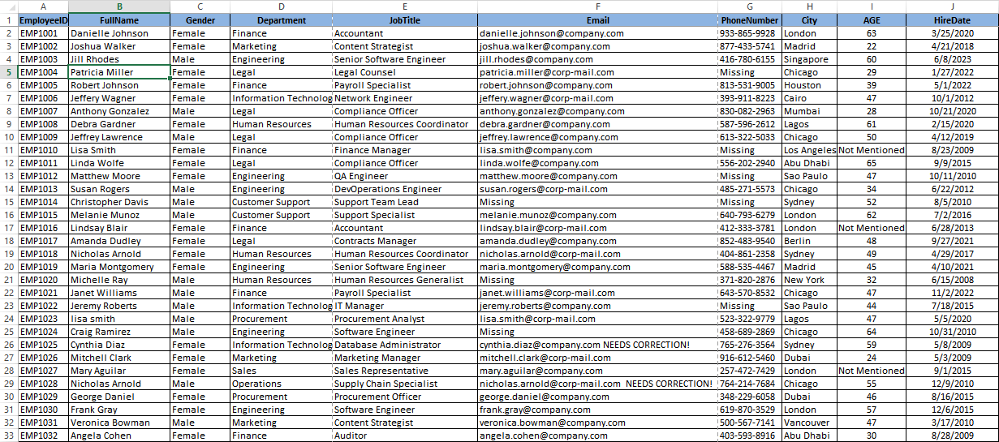
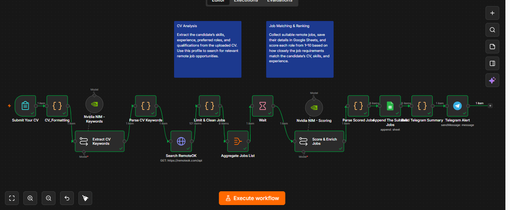

UAE Golden Visa holder · Ajman, UAE
Engineering student · Data-focused problem solver
Ahmed Tarek
Hassanein.
Engineering Student • Excel & Data Cleaning Specialist • Python and Automation Learner
I organize, clean, and transform data while building practical Python and automation solutions. I’m developing toward cloud data engineering through hands-on projects and a foundation in networking and communications.
Open to data entry, Excel, junior Python, automation, and entry-level technical opportunities.
Excel & data cleaningPython fundamentalsWorkflow automationTechnical supportCloud data engineering
01 / About
Practical experience.
Engineering direction.
I combine an engineering education with real experience organizing information, cleaning spreadsheets, troubleshooting devices, and building learning projects in Python and automation.
I’m a Networking and Communications Engineering student based in Ajman. My data-entry background taught me to work carefully with large amounts of information, identify inconsistencies, preserve confidentiality, and turn unstructured records into useful digital data.
I enjoy work involving data, systems, organization, and technical problem-solving. My long-term direction is cloud data engineering, supported by continued learning in Python, SQL, databases, pipelines, cloud foundations, and networking.
LocationAjman, UAE
ResidencyUAE Golden Visa
ArabicNative
EnglishB2
02 / Skills
Tools for accurate,
organized work.
Skill labels describe my current working level—without artificial percentages.
Python & programming
Automation & technical
My next technical layer
03 / Featured projects
Learning by building
useful systems.
Projects are labeled by status and link only to repositories that were verified.

01Excel & DataCompleted
Excel Employee Data Cleaning
Transforms inconsistent employee records into a clean, standardized dataset ready for review and analysis.
- Microsoft Excel
- Data validation
- Formatting
- Data organization
View project details +
Problem: Raw records contained inconsistent categories, dates, phone formats, typos, and fields requiring review.
What I did: Standardized names, dates and categories; corrected obvious issues; removed unused columns; and flagged uncertain records rather than deleting potentially useful information.
Skills: Careful review, spreadsheet organization, data cleaning, documentation, and before/after comparison.

02Automation & DataCompleted
CV-to-Remote-Job Matching Workflow
Converts CV information into an organized list of relevant remote jobs, scores each match, and saves the results for review.
- n8n
- AI-assisted extraction
- Google Sheets
- HTTP requests
View project details +
Workflow: Receive CV text, extract skills and target role, search relevant jobs, structure the results, score each role from 1–10, save to Google Sheets, and send a Telegram alert for strong matches.
Demonstrates: Automation design, information extraction, job-data organization, integration logic, and suitability scoring.
The public repository uses sample or anonymized information only.
STORE / INVENTORY
1 View inventory
2 Add product
3 Restock item
4 Sell product
5 Store reportPythonCompleted learning project
Python Store Inventory Manager
A menu-driven command-line application that manages products, stock, sales, inventory value, and store reports.
- Python
- Dictionaries
- Functions
- Exception handling
View project details +
View inventory, add and restock products, validate sales against available stock, track units sold and revenue, identify low-stock items, and report the best-selling product.
Skills: Modular functions, nested dictionaries, loops, conditions, input validation, and inventory calculations.
CLASS
SUMMARY
04SUMMARY
Python & DataCompleted learning project
Python Student Management System
Stores student grades, supports updates, and calculates individual and class-level performance summaries.
- Python
- Nested dictionaries
- Calculations
- Input validation
View project details +
Displays and searches students, adds records, updates subject grades, calculates averages and pass/fail results, identifies highest and lowest performers, and produces a class summary.
Skills: Nested data structures, functions, loops, conditions, dictionary updates, and summary calculations.
CSV × 5→XLSX
Success5 / 50 failed
05Python AutomationCompleted
CSV Batch Conversion & Excel Template Automation
Processes multiple CSV files in batches and converts them into a required, standardized Excel template format.
- Python
- CSV processing
- Excel output
- Batch automation
View project details +
Verified project result: Five CSV files were processed successfully, five outputs were generated in the required format, and zero files failed.
Skills: Folder processing, template-based transformation, data-format standardization, and error tracking.
Private local paths and source files are intentionally not published.
OverviewSubject AStandards
PRIVATE DATA
REDACTED
06REDACTED
Practical Data ProjectSanitized case study
Educational Data Attainment Processing
A privacy-safe case study in handling complex, multi-sheet education workbooks while preserving a strict template.
- Complex Excel workbooks
- Multi-sheet data
- Accuracy
- Confidentiality
View project details +
The work involved placing data carefully in the correct standards and subject sheets, maintaining the original workbook layout, and supporting educational attainment calculations.
Skills: Template preservation, multi-sheet organization, educational data processing, and confidential handling.
No student names, real marks, school identity, or confidential files are shown.
07
Python UtilityCompleted learning project
YouTube Media Downloader
Two advanced command-line tools for downloading authorized videos or playlist items with quality, audio, subtitle, metadata, and range controls.
- Python
- yt-dlp
- CLI design
- Dataclasses
- Unit testing
View project details +
Video workflow: Inspect available formats, select a target height or audio format, save subtitles and metadata, and simulate a command before writing files.
Playlist workflow: List items, choose ranges, resume safely with a download archive, reverse the order, and continue past unavailable entries.
Engineering improvements: Shared validation and configuration module, retry and timeout handling, thread-safe progress output, argparse interfaces, clear exit codes, and unit tests.
Use only for content you own or are authorized to save. Users are responsible for respecting copyright and platform terms.
08
Local AI ResearchExperiment · In progress
Hardware-Aware Local AI Deployment Lab
An ongoing lab for selecting, quantizing, and running local language models within realistic laptop memory and CPU limits.
- Ollama
- GGUF models
- llama-cpp-python
- Python
- Local APIs
View project details +
Research focus: Compare model sizes and quantizations, choose safe context limits, and match Qwen, Gemma, Llama, Hermes, and Qwythos variants to available hardware.
Deployment practice: Configure Ollama Modelfiles, run GGUF models with CPU-conscious settings, test Python chat clients, and expose a localhost OpenAI-compatible API for application integration.
Engineering judgment: Document memory constraints, expected performance, fallback models, and the security boundary between a local API and cloud automation services.
This is a research and deployment experiment. The supporting ChatGPT project contains no uploaded source files, so it is not presented as a completed code repository.
More work
Learning & practice
Smaller repositories and ongoing experiments that show consistent practice—not commercial client work.
04 / Experience
Accuracy, service,
and problem-solving.
May 2023 — Aug 2024
Data & administration
Data Entry Assistant
Computer / Data Entry Center
- Entered and organized information using Microsoft Excel and Word.
- Converted handwritten, PDF, and image-based information into structured digital records.
- Reviewed records for errors, missing values, and inconsistencies; corrected and formatted data carefully.
- Organized files and handled information with confidentiality.
2023 — 2024
Technical support
Technician & Technical Support Assistant
Electronics Repair Center
- Assisted with laptop and smartphone troubleshooting.
- Diagnosed basic hardware and software issues and supported software installation.
- Helped customers understand technical problems and practical next steps.
Previous part-time role
Customer operations
Cashier
Supermarket
- Managed cash transactions accurately and assisted customers.
- Worked responsibly and maintained attention to detail under pressure.
05 / Education
A technical foundation
built for what’s next.
2024 — 2028 Expected
Bachelor’s degree · Current student
01Networking & Communications Engineering
Higher Institute of Engineering, Egypt
Studying networking, communications, electronics, circuits, mathematics, physics, logic design, programming, and related engineering fundamentals.
2024
High School Diploma
02Ajman Private School
United Arab Emirates
95.16%Final grade
06 / Roadmap
Currently learning,
in a clear sequence.
A practical path from stronger foundations to end-to-end cloud data projects.
- 01Strengthen PythonCore language and data processing
- 02Learn SQLQuerying and managing structured data
- 03Improve advanced ExcelAnalysis, transformation, and reporting
- 04Learn cloud fundamentalsServices, storage, compute, and security basics
- 05Study databases & data modelingReliable structures for useful data
- 06Learn ETL & data pipelinesMoving and transforming data accurately
- 07Build cloud data projectsConnect the skills through practical work
- 08Continue networking fundamentalsSupport the engineering foundation
07 / Contact
Let’s turn information
into useful work.
I’m open to conversations about data entry, Excel cleaning and formatting, administrative work, junior Python and automation projects, or entry-level technical support opportunities.
Current locationAjman, United Arab EmiratesUAE Golden Visa holder